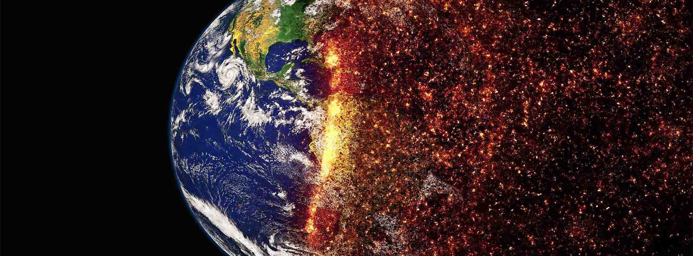

What is causing climate change?
Geological records stretching back millions of years indicate a number of large variations in Earth’s past climate. These have been caused by many natural factors, including changes in the sun, volcanoes, Earth’s orbit and CO2 levels. However, comprehensive assessment by scientists shows that it is extremely likely that human activity has been the dominant cause of warming since the mid-20th Century.
Greenhouse gas emissions
Evidence that CO2 emissions are the cause of global warming is very robust. Scientists have known since the early 1800s that greenhouse gases in the atmosphere trap heat. Global CO2 emissions from human activity have increased by over 400% since 1950. As a result, the concentration of CO2 in the air has reached more than 400 parts per million by volume (ppm), compared to about 280ppm in 1750 (around the start of the Industrial Revolution).
7 Facts about Climate Change
- Climate change is real and man-made, and there is overwhelming scientific consensus that this is true
- All major climate change reports are thoroughly researched and based on the most accurate, up-to-date science
- Climate change studies are transparent
- Addressing climate change will strengthen the economy
- Climate scientists are underpaid — or not paid at all — for their work
- Federal climate change reports are credible because they are written by scientists, not politicians
- Climate change reports consider a wide range of possible future scenarios
